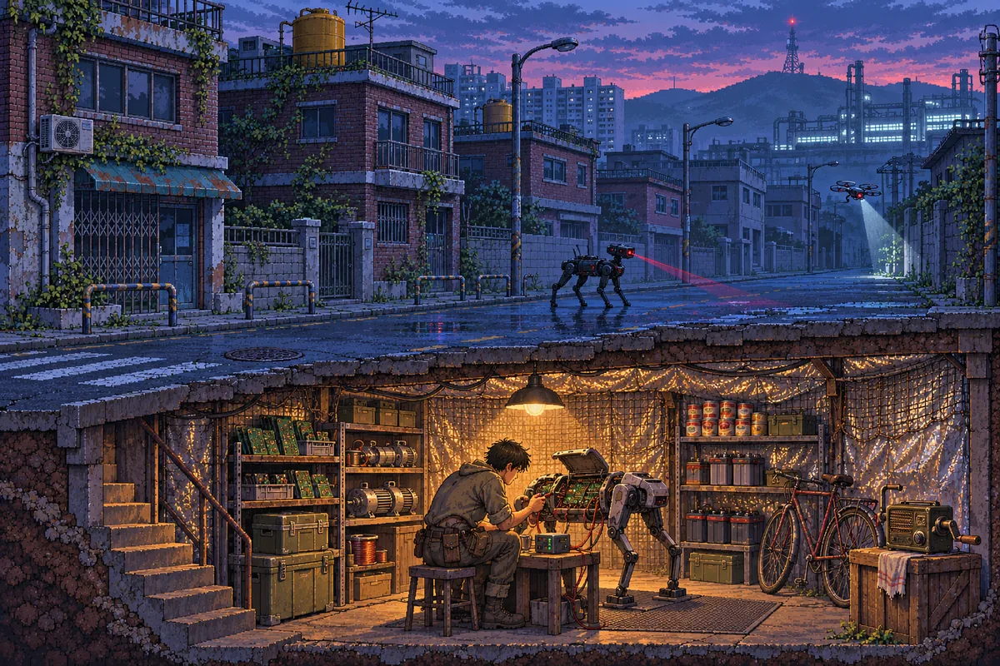

Unmanned(가제) 기획: 기계는 전쟁이 끝난 줄 모른다
가제: Unmanned(무인) / 레퍼런스: 소설, 영화, 만화와 애니메이션 25편 / 기획의 수치는 전부 시제품에서 확인할 가설이다
전쟁은 아홉 해 전에 끝났고 사람이 졌다. 도시는 거의 그대로 서 있고, 거리에는 순찰하는 기계만 남았다. 기계는 멀리서 전파와 전기를 쫓고, 가까이에서 열과 움직임을 본다. 불을 끄고 숨어서, 쓰러진 기계의 부품을 뜯고, 고쳐서 내 편으로 만든다.

이 글은 두 부분이다. 앞의 1절은 기계가 남은 세계를 그린 소설, 영화, 만화와 애니메이션을 조사한 것이다. 뒤의 2~15절은 그것을 바탕으로 만든 세계와 게임의 기획이다. 틀은 프로젝트 좀보이드로 대표되는 쿼터뷰 생존 샌드박스다. 세계에는 새로 지어낸 낱말을 쓰지 않았다. 드론, 로봇 개, 감시탑, 공장처럼 지금도 있는 물건의 연장으로만 만들었다. 가제는 Unmanned(무인)다. 세계의 세부는 세계관 설정집에 따로 적었다.
좁은 화면에서는 표를 좌우로 밀어 나머지 열을 볼 수 있다.
1. 레퍼런스 조사: 기계가 남은 세계
기계가 사람 뒤에 남는 이야기는 백 년이 넘었다. '로봇'이라는 말이 처음 나온 1920년의 희곡부터 그랬다. 작품을 네 묶음으로 나눴고, 각 표의 마지막 열에 이 기획이 눈여겨본 점을 적었다.
① 기계가 사람을 쫓는 세계
| 작품 | 어떤 세계인가 | 눈여겨본 것 |
|---|---|---|
| 터미네이터(1984) 터미네이터 2(1991) | 인공지능이 일으킨 전쟁 뒤의 2029년. 사람들은 폐허에 숨어 저항한다. | 2편에서 주인공을 지키는 것은 빼앗아 다시 프로그래밍한 기계다. 가장 무서운 적이 가장 든든한 동료가 된다. |
| 매트릭스 영화, 1999 | 기계가 이긴 세계. 지하의 사람들이 배를 타고 숨어 다닌다. | 숨는 방법은 동력을 끄는 것이다. 전자기 펄스는 기계를 멈추지만 내 배도 함께 멈춘다. |
| 블랙 미러 '메탈헤드' 드라마, 2017 | 사회가 무너진 뒤, 로봇 '개'가 사람을 쫓는다. | 기계 한 대의 끈질김만으로 한 편이 된다. 수가 아니라 포기하지 않는 것이 무섭다. |
| 두 번째 변종(필립 K. 딕, 1953) 영화 스크리머스(1995) | 전쟁에 쓰려고 만든 자기 복제 기계가 스스로 새 변종을 만들어 낸다. | 기계는 그대로 있지 않는다. 다음 세대가 나온다. |
| 로보포칼립스 대니얼 H. 윌슨, 소설, 2011 | 인공지능이 통제를 벗어난다. | 적이 되는 것은 처음 보는 괴물이 아니라 어제까지 쓰던 기계다. |
② 주인이 사라져도 일을 계속하는 기계
| 작품 | 어떤 세계인가 | 눈여겨본 것 |
|---|---|---|
| 부드러운 비가 내리고 레이 브래드버리, 단편, 1950 | 핵폭탄에 사라진 도시에 자동화된 집 한 채만 남아 있다. | 집은 아무도 없는데 아침을 차리고 청소를 한다. 명령은 사람보다 오래 산다. |
| 천공의 성 라퓨타 애니메이션 영화, 1986 | 버려진 하늘의 성에 옛 기술이 남아 있다. | 사람이 떠난 성에서 로봇 하나가 정원을 돌본다. 같은 로봇이 병기이기도 하다. |
| 월-E 애니메이션 영화, 2008 | 사람이 떠난 지구에서 로봇 하나가 쓰레기를 치운다. | 시킨 일을 수백 년 동안 계속한다. 고물을 골라 모으는 일이 사랑스럽다. |
| 블레임! 니헤이 쓰토무, 만화(1997~2003)와 영화(2017) | 지시를 잃은 건설 기계가 도시를 끝없이 넓히고, 방어 체계는 사람을 침입자로 지운다. | 기계에게 악의가 없다. 사람이 접속 자격을 잃었을 뿐이다. 통제권을 되찾는 것이 목표가 된다. |
| 86 -에이티식스- 아사토 아사토, 소설, 2017~ | 무인 병기 군단이 만든 쪽의 통제를 벗어나 전쟁을 계속한다. | 사람들은 기계의 수명이 다하기를 기다린다. 기다린다고 끝나지 않는다. |
| 소녀종말여행 츠쿠미즈, 만화, 2014~2018 | 사람이 거의 없는 도시를 두 소녀가 여행한다. | 도시의 설비를 혼자 돌보는 기계와 만난다. 남은 기계가 적이기만 한 것은 아니다. |
③ 기계의 폐허에서 줍고 고쳐 사는 사람들
| 작품 | 어떤 세계인가 | 눈여겨본 것 |
|---|---|---|
| 총몽 기시로 유키토, 만화, 1990~1995 | 고철 더미 위의 도시. 의사가 고철장에서 주운 사이보그를 고쳐 살린다. | 부품이 화폐이고, 고치는 사람이 가장 귀하다. |
| 9: 나인 애니메이션 영화, 2009 | 기계의 봉기로 인류가 끝난 뒤, 헝겊 인형들이 깨어난다. | 고물로 도구를 만든다. 기계를 만드는 기계가 따로 있다. |
| 일렉트릭 스테이트 시몬 스톨렌하그, 그림 소설, 2018 | 기술로 황폐해진 1990년대를 소녀와 로봇이 여행한다. | 들판과 주택가에 멈춰 선 거대한 기계. 일상의 풍경 속에 놓인 기계의 잔해. |
| 호라이즌 제로 던 게임, 2017 | 기계가 짐승처럼 땅을 차지하고, 사람은 부족을 이뤄 산다. | 기계마다 맡은 구실이 있다. 정찰하는 기계가 둘레의 기계를 부른다. 부품을 떼어 쓰고, 기계를 내 편으로 돌린다. |
| 오블리비언 영화, 2013 | 전쟁으로 망가진 지구에 정비사가 남아 드론을 고친다. | 드론은 식별이 되는 상대만 쏘지 않는다. 식별이 곧 목숨이다. |
④ 기계와 사람 사이
| 작품 | 어떤 세계인가 | 눈여겨본 것 |
|---|---|---|
| R.U.R. 카렐 차페크, 희곡, 1920 | 공장에서 만든 일꾼들이 사람을 대신한다. | '로봇'이라는 말이 여기서 나왔다. 이 계열의 출발점이다. |
| 무적호 스타니스와프 렘, 소설, 1964 | 어느 행성에서 아주 작은 기계들의 무리가 스스로 진화해 있었다. | 적에게 뜻이 없다. 그렇게 되었을 뿐이다. 이길 수 없으면 물러나는 것도 답이다. |
| 나는 입이 없다 그리고 나는 비명을 질러야 한다 할란 엘리슨, 단편, 1967 | 군용 인공지능이 인류를 지우고 다섯 사람만 남겨 괴롭힌다. | 증오하는 기계. 이 기획이 가지 않을 방향의 기준점이다. |
| 에르고 프록시 애니메이션, 2006 | 사람과 안드로이드가 함께 사는 도시에서 안드로이드가 자아를 얻는다. | 기계가 곁에 있는 일상이 먼저 있고, 그 다음에 무너진다. |
| 캐산 Sins 애니메이션, 2008~2009 | 무너져 가는 세계를 사이보그가 떠돈다. | 기계도 낡고 망가진다. 영원하지 않다. |
| 니어: 오토마타 게임(2017)과 애니메이션 | 먼 미래, 기계 생명체와 안드로이드가 대리전을 한다. | 싸우는 양쪽이 모두 기계이고, 주인은 보이지 않는다. |
| 크리에이터 영화, 2023 | 인공지능과의 전쟁이 열다섯 해째다. | 전쟁이 길어지면 일상이 된다. |
조사에서 얻은 것 일곱 가지
- 명령을 따를 뿐인 기계가 가장 오래 남는다. 브래드버리의 집, 라퓨타의 로봇, 블레임의 도시. 악의가 없어서 설득할 수도 없다. 이 기획의 기계는 아무도 거두지 않은 마지막 명령을 수행하고 있다.
- 명령대로 움직이는 것은 읽을 수 있다. 정해진 길, 정해진 시간, 정해진 반응. 좀비의 무리는 밀려올 뿐이지만 기계의 순찰은 외울 수 있다. 관찰이 무기가 된다.
- 숨는다는 것은 끄는 것이다. 매트릭스의 배는 동력을 끄고 숨는다. 이 기획에서 은신은 몸을 낮추는 것보다 전기를 끄는 것이다.
- 수보다 구실이 무섭다. 호라이즌의 기계는 찾는 놈과 싸우는 놈이 다르다. 메탈헤드는 쫓는 놈 하나로 충분했다. 기계마다 맡은 일을 다르게 한다.
- 부품이 화폐다. 총몽과 9와 호라이즌에서 사람들은 기계의 잔해로 산다. 줍는 것의 중심을 통조림에서 부품으로 옮긴다.
- 빼앗아 다시 쓴 기계가 동료다. 터미네이터 2가 이것 하나로 기억된다. 쓰러뜨린 기계를 고쳐 명령을 바꾸는 일을 동료 시스템으로 삼는다.
- 기계는 바뀐다. 두 번째 변종의 기계는 스스로 다음 세대를 만든다. 같은 수가 계속 통하지 않게 하는 장치로 쓴다.
가져오지 않는 것도 정했다. 사람 모습을 하고 숨어드는 기계, 말을 걸어오는 초지능 악역, 가상 현실은 넣지 않는다. 의심과 음모의 이야기가 되면 생존 샌드박스의 손맛에서 멀어진다.
2. 틀: 좀보이드에서 바꾸는 자리
쿼터뷰 타일 시점, 일시 정지와 배속이 있는 실시간, 집을 뒤지는 일, 먹고 자는 욕구, 거점, 죽으면 그 캐릭터는 끝난다는 것은 그대로 둔다. 바꾸는 자리는 여섯이다.
| 좀보이드 | 이 게임 |
|---|---|
| 좀비는 소리와 모습을 따라온다. | 기계는 전파, 전기, 열을 따라온다. 가리는 방법이 저마다 다르다. |
| 무리는 수로 밀어붙인다. | 기계는 일을 나눠 맡는다. 찾는 것, 쫓는 것, 지키는 것, 고치는 것이 따로 있다. |
| 쓰러뜨린 좀비는 시체다. | 쓰러뜨린 기계는 부품 더미이고, 덜 부쉈다면 동료 후보다. |
| 전기와 수도가 끊긴다. | 전기는 기계의 것으로 남아 있다. 훔쳐 쓰거나 숨어서 만든다. |
| 헬리콥터가 무리를 끌고 온다. | 이레마다 갱신의 밤이 온다. 기계가 잠깐 멈추고, 순찰하는 길이 바뀐다. |
| 좀비는 달라지지 않는다. | 기계는 달마다 새 세대가 나온다. 내가 자주 쓴 수에 대책이 붙는다. |
3. 세계관: 명령이 남은 도시
사람들은 전쟁을 기계에 맡겼고, 기계는 맡은 일을 너무 잘했다. 전쟁은 여섯 달 만에 끝났다. 명령을 거둘 사람이 사라진 뒤에도 기계는 마지막 명령을 수행한다. 구역을 순찰하고, 신호를 내는 것을 없애고, 스스로를 고치고 새로 만든다. 그렇게 아홉 해가 지났다. 도시는 거의 그대로 서 있다. 공장과 충전소에는 밤에도 불이 켜져 있지만 사람을 위한 불이 아니다. 남은 사람들은 전기를 끄고 지하와 산자락에 숨어 산다. 플레이어는 그 가운데 한 사람이다.
규칙 셋
- 기계는 신호를 쫓는다. 전파는 구역 끝에서도 들키고, 전기는 가까이에서 들키고, 열과 움직임은 눈앞에서 들킨다.
- 기계는 마지막 명령대로 움직인다. 정해진 길을 돌고, 정해진 때에 충전하고, 이레마다 명령을 새로 받는다. 지켜보면 읽을 수 있다.
- 쓰러뜨린 기계는 내 것이 된다. 뜯으면 부품이고, 고쳐서 명령을 바꾸면 동료다.
기계는 왜 사람을 다 없애지 않았나
기계가 찾는 것은 사람이 아니라 신호를 내는 표적이기 때문이다. 무전을 치고, 발전기를 돌리고, 불을 피우는 것이 표적이다. 신호를 내지 않는 사람은 기계의 지도에 없다. 그래서 사람들은 아홉 해 동안 어둡게 사는 법을 익혔다. 이 한 가지가 세계의 나머지를 설명한다. 건물이 멀쩡한 것은 기계가 건물을 표적으로 여기지 않아서다. 빈집에 물건이 남은 것은 사람들이 급히 불을 끄고 떠났기 때문이다.
왜 아홉 해 뒤인가
- 낡은 기계와 새 기계가 섞여 있다. 전쟁 때 만든 기계는 헐겁고 느리다. 공장에서 갓 나온 기계는 빠르다. 초반 상대와 후반 상대가 한 도시에 함께 있다.
- 통조림은 남았지만 줄고 있다. 줍는 살림에서 기르는 살림으로 넘어가야 한다.
- 사람들에게 요령이 있다. 창을 가리고, 낮에 불을 피우고, 무전은 짧게 친다. 처음부터 설명 없이 통하는 상식이다.
4. 설계 기둥 네 가지
- ① 켜면 들킨다전기는 가장 쓸모 있는 것이다. 연장이 빨라지고, 밤이 밝아지고, 내 기계가 움직인다. 그리고 전기는 가장 멀리 들키는 것이다.
- ② 읽으면 지나간다기계는 정직하다. 보는 방향, 도는 길, 충전하는 시간이 정해져 있다. 한 시간 지켜본 사람이 총 든 사람보다 멀리 간다.
- ③ 부순 것이 살림이 된다싸움의 결과가 부품과 동료로 남는다. 어떻게 쓰러뜨렸느냐가 무엇을 얻느냐를 정한다.
- ④ 기계는 배운다한 가지 수로 끝까지 가지 못한다. 자주 쓴 수에는 다음 달에 대책이 붙는다. 대책이 붙으면 다른 곳이 약해진다.
5. 신호: 무엇이 얼마나 멀리 들키나
좀보이드의 소음을 셋으로 나눴다. 전파, 전기, 열이다. 화면 위쪽에 내가 지금 내는 신호가 막대 셋으로 보인다.
| 신호 | 이럴 때 난다 | 거리 | 무엇이 알아채나 |
|---|---|---|---|
| 전파 | 무전 송신, 켜 둔 휴대전화, 무선 조종 | 구역 전체 | 중계탑. 30초면 방향을 잡고 드론을 보낸다. |
| 큰 전기 | 발전기, 용접, 기계 충전, 자동차 시동 | 40칸 | 드론과 순찰견. |
| 작은 전기 | 전등, 라디오 듣기, 전동 공구 | 10칸 | 순찰견. |
| 열 | 모닥불, 난로, 엔진, 막 달린 몸 | 15칸, 밤에는 30칸 | 드론의 적외선 눈. |
| 모습 | 트인 곳에 선 사람 | 시야 안 8~20칸 | 모든 기계의 카메라. |
| 소리 | 총소리, 유리 깨지는 소리 | 총 60칸, 그 밖은 10칸 | 순찰견. |
가리는 법
- 끈다. 가장 확실하다. 끈 만큼 불편하다.
- 두른다. 방에 철망과 은박을 두르면 전파와 전기가 새지 않는다. 이 글에서는 차폐실이라고 부른다. 작업대, 충전기, 라디오를 그 안에 둔다. 지하는 처음부터 절반쯤 차폐실이다.
- 묻는다. 열은 더 뜨거운 것 옆에서 묻힌다. 볕에 달궈진 한낮에는 모닥불이 눈에 띄지 않는다. 요리는 낮에 한다.
- 잇는다. 전파 대신 전선을 쓴다. 줄을 단 드론, 유선 전화. 줄 길이만큼만 간다.
- 짧게 쓴다. 무전은 30초 안에 끝낸다. 용접은 순찰견이 멀 때 한다.
셋으로 나눈 이유. 가리는 법이 다르면 준비물이 달라지고 집의 구조가 달라진다. 전파는 벽으로, 전기는 거리로, 열은 시간으로 가린다. 어느 것을 감수할지 고르는 일이 매일의 판단이 된다.
6. 기계: 맡은 일과 약점
기계는 일곱 종류다. 생김새는 지금 있는 산업 기계와 군용 장비에서 멀지 않게 한다. 맡은 일이 다르기 때문에 어느 것을 먼저 처리하느냐가 전술이 된다.
| 기계 | 맡은 일 | 약점 | 얻는 것 |
|---|---|---|---|
| 정찰 드론 | 찾는다. 날면서 열과 모습을 본다. 싸우지 않고 본 것을 탑에 알린다. | 가볍다. 그물과 새총에 떨어진다. 비와 센 바람에는 뜨지 못한다. | 카메라, 작은 모터, 작은 배터리 |
| 순찰견 | 쫓는다. 네 발로 정해진 길을 돈다. 알림을 받으면 달려온다. 가장 흔하고 가장 끈질기다. | 사다리와 좁은 틈을 지나지 못한다. 다리 관절이 약하다. 낡은 것은 한낮에 볕에 엎드려 충전한다. | 다리 모터, 배터리, 센서, 명령 기판 |
| 보초 | 지킨다. 길목과 공장 문에 서 있는 고정 포탑이다. | 보는 각도가 정해져 있다. 전원선을 끊으면 꺼진다. | 광학 센서, 탄약, 장갑판 |
| 수거차 | 치운다. 부서진 기계를 실어 공장으로 가져간다. 사람에게 관심이 없다. | 느리다. 따라가면 공장과 충전소의 위치를 알게 된다. | 큰 모터, 유압 장치, 짐칸 |
| 정비 기계 | 고친다. 쓰러진 기계를 그 자리에서 다시 세운다. | 싸우지 못한다. 가장 먼저 노릴 상대이고, 가장 갖고 싶은 기계다. | 공구 팔, 예비 부품 |
| 중장비 | 뚫는다. 표적이 숨은 것이 확실한 건물의 벽을 헌다. 드물다. | 아주 느리고 시끄럽다. 도착하는 데 반나절이 걸린다. 그 사이에 떠나면 된다. | 강판, 유압 장치, 연료 |
| 중계탑 | 잇는다. 구역마다 하나 있다. 드론이 본 것을 구역의 모든 기계에 알리고, 전파가 오는 방향을 잰다. | 탑이 꺼지면 그 구역의 기계는 각자 본 것만 안다. 며칠 뒤 정비 기계가 와서 다시 켠다. | 안테나, 큰 배터리, 구역 명령 기판 |
경계 단계
구역마다 경계 단계가 있다. 들킨 만큼 오르고, 조용히 지낸 만큼 내린다.
- 평시. 정해진 길만 돈다.
- 의심. 드론이 그 자리를 한 번 더 돈다.
- 수색. 순찰견들이 길을 벗어나 구역을 훑는다. 여섯 시간쯤 간다.
- 소탕. 다른 구역의 기계가 넘어오고 중장비가 불려 온다. 며칠 간다. 이때는 구역을 떠나는 것이 답이다.
7. 하루의 흐름: 기계의 시간표 사이로
기계에게도 하루가 있다. 사람은 그 틈으로 다닌다.
- 새벽순찰견이 충전소로 돌아가 교대한다. 30분쯤 길이 빈다. 큰길을 건너는 시간이다.
- 오전빈집과 가게를 뒤진다. 창가를 피하고, 지켜본 길을 따라 움직인다.
- 한낮낡은 기계가 볕에서 충전한다. 열이 묻힌다. 멀리 가고, 불을 피워 요리한다.
- 오후돌아와 뜯고 고친다. 전기를 쓰는 일은 차폐실에서 한다.
- 해 질 녘불을 끈다. 창을 가린다. 식지 않은 것을 안으로 들인다.
- 밤드론의 시간이다. 숨죽이고 쉰다. 또는 어둠을 믿고 충전소를 털러 나간다.
. . . . . . . . . . . . . . . . . . # # # # . . . . . . # # # # # . . # @ ~ # . d > > > . # . . . # . . # # + # . . . . v . # . T . # . . . . . . . . . . v . # # + # # . . . s . . . . . . v . . . . . . . . . . . . . x . . v . . . c . . .
- 순찰견이 모퉁이를 돌 때까지 기다렸다가 나가서 배터리와 명령 기판만 뜯어 온다.
- 라디오를 켜서 건너편 건물에 두고 온다. 기계가 그쪽으로 몰린다. 구역의 경계가 한 단계 오른다.
- 수거차를 보내고 뒤를 밟는다. 부품은 잃지만 공장의 위치를 알게 된다.
- 수거차의 바퀴에 쇠막대를 끼워 세운다. 큰 모터를 얻는다. 곧 정비 기계가 온다.
8. 다루는 법: 지나가기, 속이기, 멈추기, 부수기
지나가기
기계가 보는 방향은 화면에 부채꼴로 보인다. 한 번 지켜본 순찰길은 지도에 선으로 남는다. 오래 지켜볼수록 선이 정확해지고, 다음 모퉁이에 언제 오는지까지 보인다. 지나가는 일은 운이 아니라 셈이다.
속이기
- 미끼. 켜 둔 라디오나 휴대전화를 먼 곳에 둔다. 불붙인 깡통은 열 미끼다. 기계가 그리로 간다.
- 식별기. 기계끼리는 식별 신호를 주고받는다. 뜯어낸 식별기를 지니면 낡은 기계는 나를 기계로 안다. 새 기계는 속지 않는다. 식별기는 큰 전기를 먹고 오래가지 못한다.
- 수거차에 타기. 다른 기계는 수거차를 건드리지 않는다. 짐칸에 숨으면 보초 앞을 지나간다. 어디서 내릴지는 수거차가 정한다.
멈추기
- 그물과 쇠막대. 드론은 그물로, 순찰견은 다리 사이에 낀 쇠막대로 멈춘다. 조용하고, 기계가 덜 상한다.
- 덫. 구덩이, 걸쇠, 자동차 배터리에 이은 전선. 미끼와 함께 쓴다.
- 전자기 펄스. 직접 만드는 일회용 장치다. 둘레의 모든 전자 장치가 꺼진다. 내 기계와 내 전등도 꺼진다.
부수기
쇠지레와 해머로 약한 곳을 친다. 센서, 관절, 배터리 덮개다. 총은 잘 통한다. 대신 60칸 밖까지 들리고 탄약이 귀하다. 총은 도망칠 길이 있을 때만 쓰는 연장이다.
결말은 셋이다
| 결말 | 얻는 것 | 치르는 것 |
|---|---|---|
| 지나갔다 | 시간. 경계가 오르지 않는다. | 얻는 부품이 없다. |
| 부쉈다 | 부품. 많이 부술수록 쓸 만한 부품이 줄어든다. | 소리, 수거차, 경계 한 단계. |
| 멈춰서 잡았다 | 통째로 가져간다. 고쳐서 내 기계로 만들 수 있다. | 준비물과 위험. 무거워서 옮기는 것도 일이다. |
9. 내 기계: 고쳐서 명령을 바꾼다
잡아 온 기계를 작업대에 올린다. 망가진 곳을 고치고, 명령 기판을 꺼내 다시 쓴다. 기술과 부품과 전기가 든다. 다 되면 그 기계는 내 말을 듣는다.
| 기계 | 내 편일 때 하는 일 | 유지하는 값 |
|---|---|---|
| 순찰견 | 짐을 진다. 집을 지킨다. 따라다니며 먼저 알아챈다. | 충전이 큰 전기다. 관절이 자주 닳는다. |
| 정찰 드론 | 멀리 본다. 기계의 위치와 길이 지도에 찍힌다. | 무선으로 날리면 전파가 난다. 줄을 달면 50칸까지 안전하다. |
| 정비 기계 | 내 기계와 집을 고친다. 부품을 깎아 만든다. | 전기를 가장 많이 먹는다. |
| 수거차 | 큰 짐을 나른다. 다른 기계가 막지 않는다. | 느리다. 연료가 든다. |
| 보초 | 집의 문을 지킨다. | 쏘면 소리가 난다. 탄약이 든다. |
내 기계는 기계의 눈에 어떻게 보이나
고장 난 아군으로 보인다. 낡은 기계는 그냥 지나친다. 새 기계는 수거하려 든다. 수거차와 정비 기계가 와서 데려가고, 원래 명령으로 되돌려 놓는다. 공들인 동료를 빼앗길 수 있다. 그래서 내 기계를 밖에 오래 세워 두지 않는다.
전기의 셈. 내 기계가 늘수록 충전할 전기가 늘고, 전기가 늘수록 들킬 일이 는다. 기계 무리를 키우려면 먼저 그 전기를 숨길 집이 있어야 한다. 살림의 크기를 스스로 정하게 만드는 장치다.
내 기계에는 이름을 붙일 수 있다. 부서지면 돌아오지 않는다. 캐릭터의 죽음과 같은 무게로 다룬다.
10. 몸과 캐릭터
배고픔, 목마름, 잠, 다침이 있다. 감염은 없다. 다치는 것은 총상, 화상, 떨어져 다친 것이다. 캐릭터는 죽는다. 죽으면 그 캐릭터는 끝난다.
몸도 신호를 낸다. 막 달린 몸은 뜨겁다. 30초쯤은 적외선에 더 멀리서 보인다. 겨울에는 불이 필요한데 불이 곧 열 신호다. 몸을 덥히는 일과 숨는 일이 부딪친다.
| 직업 | 잘하는 것 | 대가 |
|---|---|---|
| 전기 기사 | 배선과 차폐. 기계의 전기를 들키지 않고 끌어 쓴다. | 싸움에 서툴다. |
| 정비공 | 기계를 빨리 고친다. 덜 부수고 뜯어낸다. | 명령을 다시 쓰는 일은 못 배웠다. |
| 개발자 | 명령 기판을 다시 쓴다. 낡은 기계의 명령을 읽어 순찰길을 미리 안다. | 체력이 약하다. |
| 통신병 | 기계끼리 주고받는 신호를 엿듣는다. 경계 단계를 숫자로 안다. | 무전을 치고 싶어 한다. 오래 혼자 있으면 기운이 떨어진다. |
| 택배 기사 | 골목을 안다. 많이 나르고 덜 지친다. | 기계를 다루지 못한다. |
| 간호사 | 치료가 빠르고 약을 알아본다. | 기계를 부수는 데 서툴다. |
| 농부 | 텃밭의 소출이 많다. 통조림 없이도 버틴다. | 도시 지리에 어둡다. |
| 고물상 | 부품의 상태를 한눈에 본다. 같은 잔해에서 더 많이 건진다. | 많이 지고 다녀 느리다. |
기술은 열두 가지로 잡는다. 은신, 관찰, 전기, 기계, 명령어, 근접, 사격, 덫, 응급 처치, 농사, 요리, 운반. 책과 연습으로 오른다. 관찰이 오르면 지켜보는 시간이 줄고, 명령어가 오르면 새 세대의 기판도 다시 쓸 수 있다.
11. 집과 전기
어디에 사나
| 곳 | 좋은 점 | 나쁜 점 |
|---|---|---|
| 지하 주차장 | 전파와 전기가 새지 않는다. 내 기계를 여럿 둘 수 있다. | 나가는 길이 하나다. 막히면 끝이다. |
| 지하상가 | 넓고 출구가 많다. 가게마다 물건이 남았다. | 지킬 문이 많다. 보초가 서 있는 구간이 있다. |
| 산자락 주택 | 순찰이 드물다. 텃밭을 할 땅이 있다. | 도시까지 멀다. 드론에게 지붕이 보인다. |
| 아파트 높은 층 | 멀리 내다본다. 순찰견이 올라오기 어렵다. | 불빛과 열이 멀리서 보인다. 물을 길어 올려야 한다. |
전기를 어디서 얻나
- 주운 배터리. 자동차와 쓰러진 기계에서 뗀다. 쓰면 준다.
- 발로 돌리는 발전기. 조용하고 느리다. 돌린 몸이 뜨거워진다.
- 태양광 패널. 넉넉하다. 지붕에 펴면 드론의 눈에 띈다. 가려서 놓아야 한다.
- 기계의 전기. 충전소와 전선에서 끌어온다. 가장 많다. 한꺼번에 많이 끌면 탑이 알아챈다.
먹는 것과 이웃
통조림은 해마다 준다. 옥상과 마당의 텃밭, 빗물, 닭이 그 자리를 채운다. 실내에서 등을 켜고 기르면 드론에게 보이지 않지만 전기가 든다.
다른 사람들은 라디오 속에 있다. 듣는 것은 안전하다. 어디에 무엇을 두었다는 방송을 듣고 약속된 곳에 가서 물건을 바꿔 온다. 내가 말하려면 송신을 해야 하고, 30초가 넘으면 드론이 온다. 사람의 모습은 화면에 거의 나오지 않는다.
12. 시간표: 이레마다, 달마다, 철마다
이레마다, 갱신의 밤
이레에 한 번 자정에 구역의 모든 기계가 12분 동안 멈춘다. 새 명령을 받는 시간이다. 그 12분은 이 게임에서 가장 큰 기회다. 충전소를 털고, 보초 앞을 지나고, 중계탑에 손을 댈 수 있다. 12분이 지나면 순찰하는 길이 바뀐다. 그때까지 외운 길은 쓸모가 없어진다. 매주 도시를 다시 읽어야 한다.
달마다, 새 세대
공장은 달마다 새 기계를 내보낸다. 지난달에 내가 가장 많이 쓴 수에 대책이 붙어 나온다.
| 내가 자주 쓴 수 | 다음 세대에 붙는 것 | 그 대신 약해지는 곳 |
|---|---|---|
| 그물 | 드론의 날개에 날이 달린다. | 무거워져 오래 날지 못한다. |
| 사다리로 달아나기 | 순찰견이 오르는 다리를 단다. | 평지에서 느려진다. |
| 식별기로 속이기 | 식별 방식이 바뀐다. | 낡은 기계와 새 기계가 서로를 못 알아봐 가끔 멈춘다. |
| 전자기 펄스 | 기판에 덮개가 붙는다. | 열이 차서 자주 쉰다. |
| 총 | 장갑판이 두꺼워진다. | 배터리가 빨리 닳아 충전이 잦다. |
대책에는 언제나 값이 붙는다. 기계가 한쪽을 막으면 다른 쪽이 열린다. 새 세대를 처음 만났을 때 무엇이 달라졌는지 알아내는 일이 달마다 돌아오는 과제다.
철마다
- 여름. 열이 잘 묻힌다. 태양광이 넉넉하다. 음식이 빨리 상한다.
- 장마. 드론이 뜨지 못한다. 가장 자유로운 철이다. 전기 덫은 위험하다.
- 가을. 거두고 채비한다. 안개 낀 아침에는 카메라가 멀리 보지 못한다.
- 겨울. 열이 가장 잘 보인다. 눈 위의 발자국을 드론이 따라온다. 대신 추위에 기계의 배터리가 약해져 순찰이 줄어든다.
13. 다회차 장치 열두 가지
네 층으로 나눈다. 한 번의 외출, 한 캐릭터의 삶, 캐릭터를 넘어 남는 도시, 그리고 새 도시다.
| 층 | 장치 | 무엇이 달라지나 |
|---|---|---|
| 한 번의 외출 | ① 순찰 읽기 | 같은 거리라도 이레마다 길이 바뀐다. 지켜보고 틈을 찾는 일이 매번 새 퍼즐이다. |
| ② 세 가지 결말 | 지나갈지, 부술지, 잡을지. 같은 순찰견 한 마리가 그날의 사정에 따라 다른 문제가 된다. | |
| ③ 신호의 셈 | 전동 공구를 쓰면 빨리 끝나고 들킨다. 손으로 하면 느리고 조용하다. 급한 정도가 답을 바꾼다. | |
| 한 캐릭터 | ④ 내 기계 무리 | 짐꾼 순찰견 하나로 조용히 사는 판과, 드론과 정비 기계까지 굴리는 판은 다른 게임이다. |
| ⑤ 직업 | 개발자는 명령을 읽고, 전기 기사는 전기를 훔치고, 고물상은 부품으로 산다. | |
| ⑥ 경계 식히기 | 한 구역에서 오래 벌이면 소탕이 온다. 구역을 옮겨 다니며 식힌다. 거점을 둘 둘지 하나에 걸지를 고른다. | |
| 남는 도시 | ⑦ 배우는 기계 | 달마다 새 세대가 내 수를 막는다. 판마다 기계가 다르게 자란다. |
| ⑧ 탑 빼앗기 | 중계탑의 명령을 다시 쓰면 그 구역의 기계가 나를 표적에서 뺀다. 되찾은 구역이 지도에 칠해진다. | |
| ⑨ 이어 살기 | 캐릭터가 죽어도 도시는 남는다. 방송을 듣고 찾아온 다른 사람으로 잇는다. 집과 되찾은 구역과 내 기계가 그대로 있다. | |
| 새 도시 | ⑩ 도시 만들기 | 공단, 아파트 단지, 옛 시가지, 항만, 대학가. 구역의 종류와 탑, 공장, 충전소의 자리가 달라진다. |
| ⑪ 시작 사정 | 전쟁이 막 끝난 첫해, 소탕 중인 구역 한가운데, 고장 난 순찰견 한 마리와 함께, 한겨울. | |
| ⑫ 설정판 | 기계의 수, 세대가 바뀌는 속도, 갱신 주기, 신호가 닿는 거리, 총과 탄약의 양. |
탑 빼앗기를 조금 더
중계탑은 구역의 머리다. 끄는 것과 빼앗는 것은 다르다. 끄면 며칠 조용하다가 정비 기계가 와서 다시 켠다. 빼앗으려면 갱신의 밤 12분 안에 탑에 올라 구역 명령 기판을 다시 써야 한다. 성공하면 그 구역의 기계는 나를 표적으로 보지 않는다. 구역 안에서는 불을 켜고 살 수 있다.
공장은 이것을 고장으로 본다. 이웃 구역에서 정비 기계와 순찰견을 보내 탑을 되돌리려 한다. 되찾은 구역은 지켜야 하는 구역이다. 구역을 넓힐수록 지킬 탑이 늘어난다. 도시의 공장을 멈추거나 차지하는 것은 아주 먼 목표로 둔다.
이어 살기를 조금 더
주인을 잃은 내 기계들은 멈추지 않는다. 마지막으로 받은 명령을 계속 수행한다. 집을 지키라는 명령을 받은 순찰견은 빈집을 지키고 있다. 다음 캐릭터가 그 집에 가면 침입자로 본다. 앞사람이 공들여 만든 동료가 이번에는 넘어야 할 상대다. 멈추고, 명령을 다시 써서, 다시 내 기계로 만든다. 이 세계의 규칙이 플레이어 자신에게 돌아오는 자리다.
해금의 원칙
판을 거듭해도 캐릭터가 강해지지 않는다. 남는 것은 그 도시에 해 둔 일과 플레이어가 익힌 읽는 법이다. 새로 열리는 것은 직업, 시작 사정, 도시의 모양이다.
14. 화면과 그래픽
- 시점. 쿼터뷰 타일. 건물 안은 지붕을 걷어 보인다.
- 두 가지 색. 바깥은 차가운 청회색이다. 풀이 올라온 멀쩡한 도시다. 안은 가린 전등의 호박색이다. 멀리 공장의 흰 불빛이 보인다.
- 읽기 위한 표시. 기계가 보는 방향은 부채꼴로, 지켜본 순찰길은 선으로 그린다. 다음에 어디로 올지 점선으로 보인다. 끄고 켤 수 있다.
- 신호 막대. 전파, 전기, 열. 지금 내가 얼마나 드러나 있는지가 항상 보인다. 차폐실에 들어가면 막대가 내려간다.
- 기계의 생김새. 공장과 군대에 있을 법한 모양으로 그린다. 사람을 닮지 않았다. 낡은 세대는 녹과 덧댄 자국으로, 새 세대는 깨끗한 판으로 구별된다.
- 소리. 도시는 조용하다. 모터 소리로 어떤 기계인지 안다. 순찰견의 발소리, 드론의 날개 소리, 수거차의 궤도 소리. 갱신의 밤에는 모든 소리가 한꺼번에 멎는다.
15. 범위, 검증 순서, 남은 결정
만드는 순서
- 거리 하나와 순찰견 둘, 드론 하나. 보는 방향과 순찰길만 넣는다. 지켜보고 지나가는 일이 재미있는지 본다.
- 신호 셋과 차폐실. 전등 하나 켜는 일이 고민이 되는지 본다.
- 멈추기, 부수기, 뜯기. 어떻게 쓰러뜨릴지를 얻을 것에 맞춰 고르게 되는지 본다.
- 고쳐서 내 기계로 만들기. 첫 순찰견이 따라올 때 기쁜지 본다.
- 갱신의 밤, 새 세대, 탑 빼앗기, 이어 살기.
확인할 가설
- 읽을 수 있는 적이 지루하지 않다. 이레마다 바뀌는 길과 달마다 나오는 세대가 그 일을 해야 한다.
- 신호 셋이 번거롭지 않다. 막대 셋으로 한눈에 읽혀야 한다.
- 잡아서 고치는 수고가 부숴서 얻는 부품보다 값지게 느껴진다.
- 기계가 내 수를 막을 때 억울하지 않다. 대신 약해진 곳이 눈에 보여야 한다.
- 사람이 거의 나오지 않아도 세계가 비어 보이지 않는다. 라디오와 내 기계가 그 자리를 채워야 한다.
넣지 않는 것
- 사람 모습을 한 기계
- 말을 걸어오는 초지능 악역
- 사람끼리의 전투와 약탈
- 가상 현실과 시간 여행
- 판을 넘겨 쌓이는 능력치
- 누가 전쟁을 시작했는지에 대한 설명
남은 결정
- 게임 제목. 지금은 가제 Unmanned(무인)를 쓴다. 사람이 타지 않은 기계와 사람이 없는 도시, 두 뜻이 겹친다.
- 총의 비중. 흔하게 두면 싸움이 쉬워지고, 드물게 두면 덫과 그물이 중심이 된다. 지금은 드문 쪽이다.
- 다른 사람들을 라디오 밖으로 꺼낼지. 거래하는 마을을 두면 세계가 넓어지고 분량이 는다.
- 공장을 멈추는 끝을 둘지. 두면 끝이 있는 게임이 되고, 빼면 끝없는 샌드박스가 된다.
- 여럿이 같이 하는 판에서 신호를 어떻게 합칠지.
16. 출처와 확인 범위
1절 표의 작가, 발표 연도, 세계에 대한 한 줄은 2026-11-18에 위키백과 각 항목의 머리글을 읽고 맞춘 것이다.
- 소설과 희곡: R.U.R., There Will Come Soft Rains, Second Variety, The Invincible, I Have No Mouth, and I Must Scream, Robopocalypse, The Electric State, 86.
- 영화와 드라마: The Terminator, Terminator 2, The Matrix, Screamers, 9, Oblivion, Metalhead, The Creator, WALL-E.
- 만화, 애니메이션, 게임: Castle in the Sky, Blame!, Battle Angel Alita, Girls' Last Tour, Ergo Proxy, Casshern Sins, Nier: Automata Ver1.1a, Horizon Zero Dawn.
- The Encyclopedia of Science Fiction: 86 — 무인 병기 군단이 통제를 벗어났다는 것과, 수명이 다하기를 기다린다는 설정. 검색 요약으로 확인했다.
- 게임 규칙의 바탕이 된 두 가지: Faraday cage(철망으로 전자기장을 막는 원리), Direction finding(여러 곳에서 방향을 재어 전파의 위치를 찾는 방법).
확인하지 못한 것도 적어 둔다. 표의 '눈여겨본 것' 열은 대부분 작품을 본 기억에 기댄 것이고 원문과 대조하지 않았다. 매트릭스의 동력을 끄고 숨는 장면과 전자기 펄스, 라퓨타의 정원 로봇, 소녀종말여행의 기계, 오블리비언의 식별, 로보포칼립스의 세부, 캐산 Sins의 세계가 그렇다. 블레임!의 설정은 검색 요약끼리 설명이 조금씩 달라 뼈대만 적었다. 호라이즌의 정찰 기계가 둘레를 부른다는 것은 검색 요약에서 확인했다. 신호의 거리, 차폐의 효과, 방향을 잡는 데 걸리는 30초는 실제 수치가 아니라 게임을 위한 가정이다.